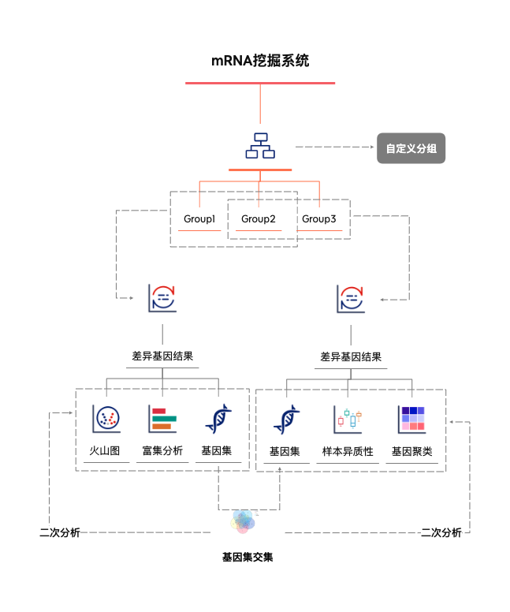
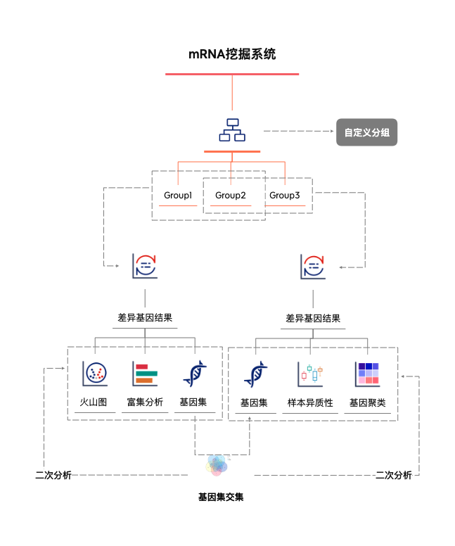

分析流程demo#
分析流程demo 
- 数据分组 自定义分组 分组名称+选择样本
- 筛选数据 选择自己想看得基因
- 工具选择 ，差异基因
- KEGG/GO注释
- 不同分组差异基因- 保存基因集
- 基因集 交集基因+KEGG、GO、GSEA
- 选择基因 样本异质性分析
- 样本关联系行聚类
使用技巧
- 每个任务结果表格中均可以进行数据筛选。
- 每个任务结果表格
右下角均可以进行工具调度。 - 每个任务结果图可以临时标题、颜色、值大小进行 图库保存。可在图库里面进行查看、下载、合并图片。
分析流程demo 
使用技巧
右下角均可以进行工具调度。